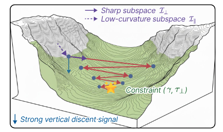
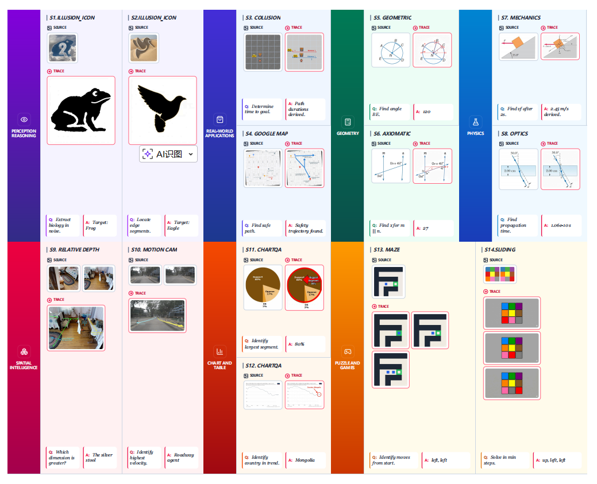
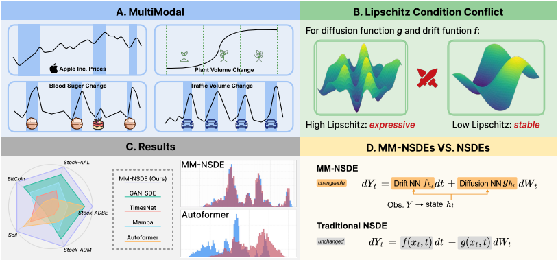
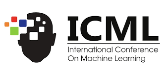

$ Hi there, I'm
Wanbo Zhang
$ Sometimes I explore what the model gets from training data█
Current Research

Data-Centric AI
Research Focus
Focus on data selection, data pruning, and data mixing for better training corpora.

LLM Training Process
Research Focus
Investigating the function of each training stage and why training succeeds or fails.
Education
Undergraduate
Fudan University · 2023 ~ 2027
B.S. Student
I am an undergraduate student in Software Engineering at Fudan University, supervised by Prof. Kaiyu Dai.
My research focuses on Large Language Models(LLMs) training data and training process, spanning LLM evaluation, LLM self-evolution, and agent cognition. I have published papers at venues including ICML 2026 and IJCAI 2026, with additional manuscripts under review at ECCV 2026. I also serve as a reviewer for leading venues such as TMC.
Outstanding Student Scholarship (Top 25%)
Understanding the Limitations of Neural SDEs under Shifting Data-Generating Processes
Towards Efficient LLMs Annealing with Principled Sample Selection (Expected Spotlight)
UniG2U-Bench: Do Unified Models Advance Multimodal Understanding? (Expected)

Towards Efficient LLMs Annealing with Principled Sample Selection
Anonymous Authors

UniG2U-Bench: Do Unified Models Advance Multimodal Understanding?
Anonymous Authors

Understanding the Limitations of Neural SDEs under Shifting Data-Generating Processes
Anonymous Authors
Undergraduate Student
B.S. student in Software Engineering at Fudan University, focusing on data-centric AI and LLM training processes.
Started Data-Centric LLM Research
Began systematic exploration of data selection, data pruning, and data mixing for more efficient model training.

IJCAI / ICML / ECCV Progress
Advanced work on neural SDE limitations, principled sample selection for LLM annealing, and multimodal understanding benchmarks.
2 awards spanning 2 categories
Outstanding Student Scholarship (Top 25%)
Fudan University
上海市计算机应用能力大赛二等奖
Shanghai
往昔少年时，家中长者常劝戒，“万般皆下品，惟有读书高”。然懵懂之辈实践浅薄，常怀不识之念。胸无点墨，又不耐寒窗苦读，见手不释卷，胸有锦绣者。常羡而慕之，乃效仿，却难得其中“三昧”。于是叹曰，非吾之过，此天赋使然也。遂沉免于虚无缥缈之梦，蹉跎岁月，虚度年华。今时今日，美念及此，常追悔莫名。
人皆恰同学少年，风华正茂，年少有为。唯鱼知长叹“黑发不知勤学早，白首方悔读书迟”。是以今日之苦难，乃昨日怠惰之所致，今日之贫困，亦为昨日之荒废所赐。
方今观之，若是当初常抱铁杵磨针，水滴石穿之念，今日断不至于此。困又于清贫方觉醒悟，然则亡羊补牢犹未迟也。于将奋力一搏，以慰余生。故无备之人不和，沉迷悔恨，难以自拔。